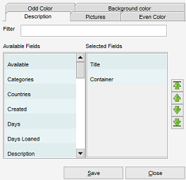

Card view settings
Menu path: Settings > View Settings
The view settings allow you to change the colors and the information shown in the view.
Description
Select the field which will be used to describe the item in the card view.

On the left hand side of the screen the available fields are shown. On the right hand side the fields that are
currently part of the description are shown. Double click on one of the available fields (columns) to add it
to the view. Double click on one of the selected fields to remove the field (column) from the description.
On the top you'll find a filter field. This can be used to quickly find one of the available fields
(as the list can be quite long).
Using the arrow buttons (right hand side of the screen) the order of the selected fields can be changed.
Click on one of the selected fields and press the appropriate arrow button to move the field up, to the top, down or to the bottom of the list.
Pictures
Here you can select the image that will be displayed. If the first picture is empty, the second picture is
shown (and so on).
Colors
Set the even and odd color and/or set the background color for all the cards.